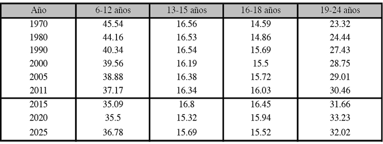

alunas cosas que aprendi en esta etapa:
Lectura y escritura: 1º y 2º de Primaria (de 6 a 8 años).
- Las tablas de multiplicar de 1 al 10 empiezan a aprenderlas a finales de 2º de Primaria (7-8 años), aunque todo depende del colegio.
- A final de 3º de Primaria y en 4º es cuando los niños empiezan a aprender a dividir (9-10 años).
- Conocimientos sobre el medio que les rodea: viven una primera aproximación a la ciencia desde 3º de Primaria (a partir de los 8-9 años).
- Y comienzan a conocer datos sobre nuestra historia entre 5º y 6º de Primaria (10-11 años).
La Educación Primaria supone una consolidación de los primeros cursos de aprendizaje en el colegio. Finalizarán su etapa con un vocabulario mucho más amplio y nociones sobre cómo sintetizar la información, una técnica que más tarde les ayudará a estudiar de forma más intensa (por ejemplo, a través de mapas o resúmenes). Las materias comienzan a ser mucho más específicas, pero la creatividad y el aprendizaje mediante el juego siempre serán recursos excelentes para continuar despertando el interés en los más pequeños: ¡no dejemos de cultivar el arte de aprender!
